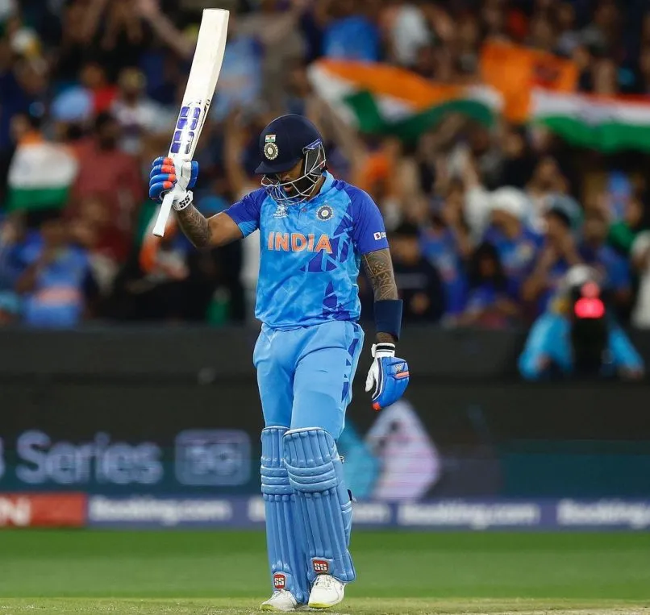

Unless you’re living under a rock, that Team India is setting new records at the ICC Men’s T20 World Cup is not news. But tone manw ho had all eyes on him in this tournament is none other than batsman Suryakumar Yadav, who’s been setting and smashing records every innings. On November 8, 2022, Suryakumar Yadav became the first Indian player to score a thousand T20-International runs in a calendar year. Playing the final Super 12 stage match against Zimbabwe in Melbourne Cricket Ground (MCG), Australia, Yadav scored an impressive 61 not out off just 25 balls. His innings consisted of six fours and four sixes. As he is all over today’s headlines, we take a look at who Suryakumar Yadav is.
Born on September 14, 1990, in Mumbai, Maharashtra, Suryakumar Yadav is a right-handed middle order batter and right-arm spin bowler in the Indian international cricket team. Currently, he is the number one batsman in the world in T20I, following his position as the world’s best no. 4 batsmen in T20 cricket.
Born to Ashok Kumar Yadav who migrated from Ghazipur to Mumbai, Suryakumar Yadav developed a knack for the sport when he was quite young. Having learnt cricket from playing gully cricket in the streets of Varanasi, Yadav was finally enrolled in a cricket camp at BARC colony in Chembur at the age of 10 after they moved to Mumbai.
When he turned 12, he went to the Elf Vengsarkar Academy where he was mentored by former Indian cricketer Dilip Vengsarkar. Later while studying at Pillai College of Arts, Commerce and Science, Yadav won the MA Chidambaram Trophy for the best Under-22 cricketer of the year in 2011. His impressive innings of 721 runs at an average of 80.11 in seven matches, including four fifties and a couple of centuries further cemented his position as a promising cricketer. Yadav met his wife Devisha Shetty for the first time in 2012 at the R.A. Podar College Of Commerce & Economics, Mumbai, where he was bowled over by her dancing skills. He now stays in Chembur, Mumbai, with his parents, sister, wife and two dogs, Oreo and Pablo.
| FORMAT | Mat | Inns | NO | Runs | HS | Ave | BF | SR | 100s | 50s | 4s | 6s | Ct | St |
|---|---|---|---|---|---|---|---|---|---|---|---|---|---|---|
| Test | 1 | 1 | 0 | 8 | 8 | 8.00 | 20 | 40.00 | 0 | 0 | 1 | 0 | 0 | 0 |
| ODI | 26 | 24 | 3 | 511 | 64 | 24.33 | 504 | 101.38 | 0 | 2 | 53 | 11 | 15 | 0 |
| T20I | 51 | 49 | 10 | 1780 | 117 | 45.64 | 1021 | 174 | 3 | 14 | 162 | 101 | 36 | 0 |
| FC | 82 | 137 | 8 | 5628 | 200 | 43.62 | 8829 | 63.74 | 14 | 29 | 801 | 56 | 106 | 0 |
| List A | 128 | 115 | 16 | 3365 | 134* | 33.98 | 2343 | 103.76 | 3 | 19 | 331 | 98 | 74 | 0 |
| T20 | 261 | 239 | 51 | 6608 | 117 | 35.14 | 4355 | 151.73 | 4 | 43 | 667 | 112 | 132 | 0 |